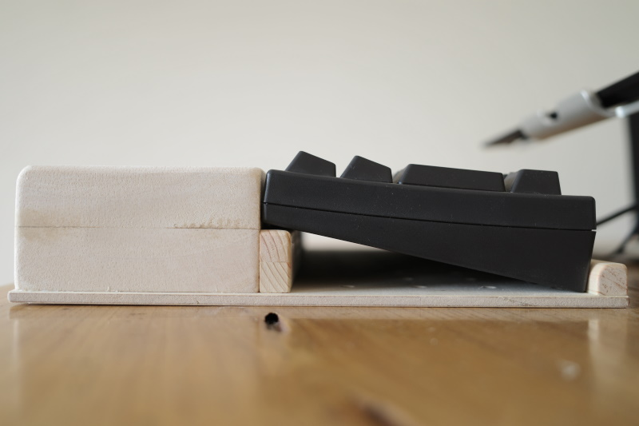

世の中にはPCキーボードが溢れていますが、そのほとんどがキーボードの奥に向かって傾斜が上がっていく形状になっています。日本が誇る高級キーボード「RealForce」や「HappyHacking Pro」ですら、そうなっています。  しかし、エルゴノミクスキーボードと呼ばれる身体に優しいキーボードのいくつかは、奥に向かって傾斜が下がっていく形になっています。外付けのキーボードがあればぜひ試していただきたいのですが、キーボードの手元側を本などで嵩上げして、キーを打ってみてください。手首が楽だと思います。キーボードの傾斜は、本来、奥に向かって下がっていくべきなのです。